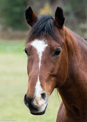
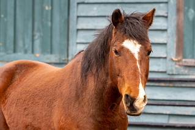

SQ · Image + Text Section (large image left, body right)


03 A Story We're Proud Of
Meet Rowdy.
A gentle soul, rescued from an animal hoarding situation in Saratoga, New York, alongside thirteen other horses.
When Rowdy arrived at Catskill Animal Sanctuary, he was several hundred pounds underweight, suffering from rain rot, and had severely neglected hooves. Today, he is one of the horses we sponsor - part of a 150-acre Hudson Valley refuge that has rescued over 5,000 animals in twenty-five years.
“Life is life - whether in a cat, or dog, or man. The idea of difference is a human conception for man's own advantage.” Sri Aurobindo
- Sanctuary
- Catskill Animal Sanctuary
- Year sponsored
- 2026